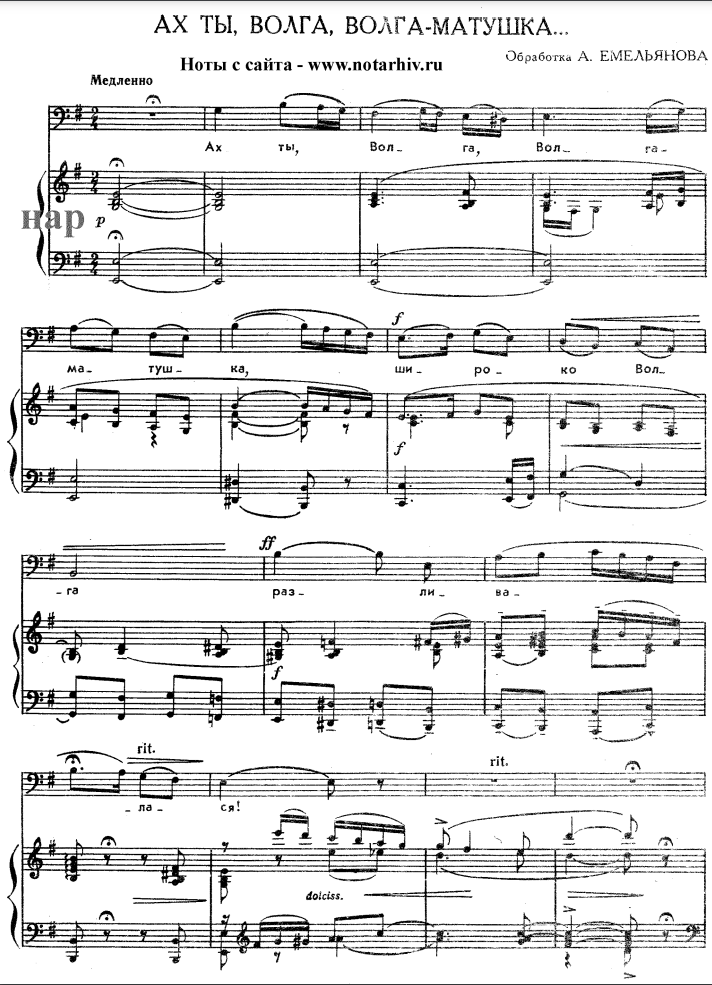
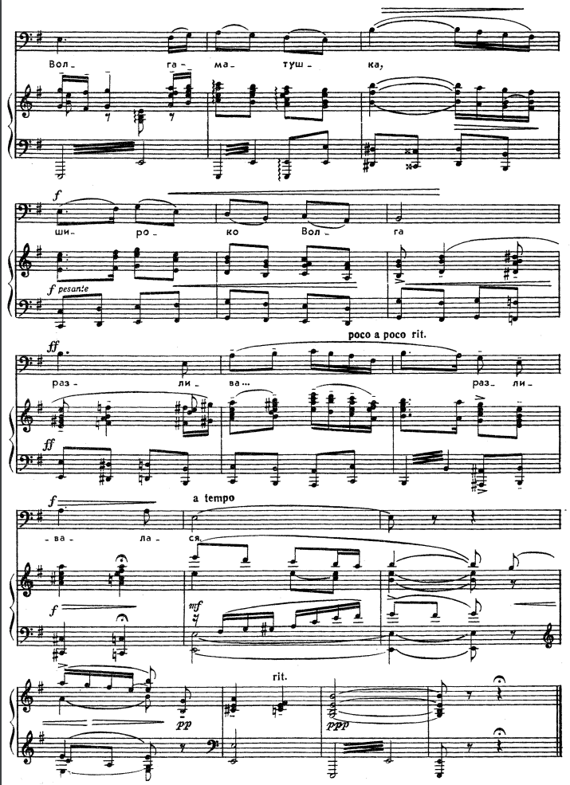
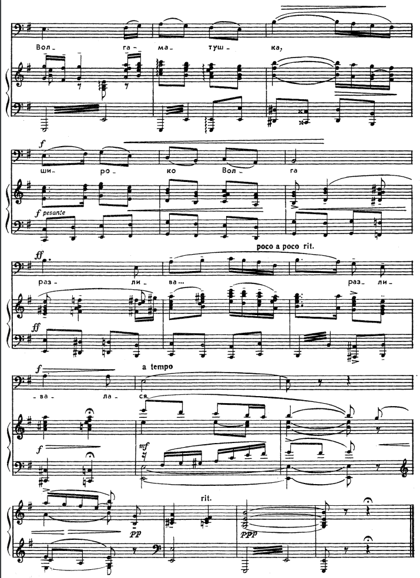
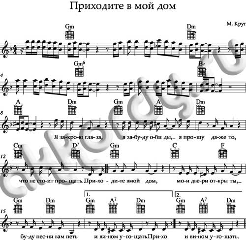

Русский романс, авторская песня, шансон.
Изучите материал о жанрах музыки. Чтобы перейти к учебному материалу, кликните на каждую из иконок.
Изучите материал о жанрах музыки. Чтобы перейти к учебному материалу, кликните на каждую из иконок.
Романс – это камерное вокальное произведение для голоса с инструментальным сопровождением.
Песня – это живая история народной души, явленная в слове и переложенная на музыку.
Шансон – это популярный музыкальный жанр, пришедший из Франции, который отличается связанностью сюжетной линии, наличием разговорных слов в тексте и простым сюжетом, знакомым каждому слушателю.
Особенности романса:
- романс в то время обозначал светскую песню на испанском (романском) языке не на религиозный
сюжет, отсюда и название романс.
Особенности поп песни:
- чёткая ритмическая структура;
- текстовая составляющая;
- разбиение на куплеты;
- наличие припева;
- использование рефрена;
- параллелизм.
Особенности шансона:
- сюжетность текста;
- хорошо воспринимаются на слух;
- текст весьма понятен;
- знакомый сюжет;
Невозможно рассказать всё о русском романсе, ведь этот жанр так полюбился нашими соотечественниками, и создано огромное количество произведений в этом жанре. В Россию романс пришёл уже из Франции во второй половине XVIII века. На этот период пришёлся расцвет русской поэзии и новый жанр в вокальном искусстве пришёлся как нельзя кстати, впитав в себя характерные русские поэтические черты. Само понятие русский романс появилось гораздо позже, когда народные песенные мелодии проникли в умы образованных социал-демократов. Именно в русском-народном творчестве и находятся истоки зарождения русского романса как отдельного жанра в вокальном искусстве. Песенное творчество середины XVIII – XIX века, дошедшее до нас, в большинстве своём представлено анонимными авторами. В те времена этот жанр передавался устно, поэтому менялись и слова, и мелодия. Со временем стали появляться люди, которые пытались собрать произведения нового жанра воедино и записать их. Возможно, они и сами привносили что-то в эти произведения. Позднее к жанру романса стали обращаться многие композиторы. Самые знаменитые русские композиторы, которые сочиняли в жанре русского романса, это Чайковский, Рахманинов, Римский-Корсаков, Алябьев, Варламов, Глинка, Гумилёв, Даргомыжский, Кюи, Свиридов и многие другие. Очень сильное влияние на развитие русского романса оказало влияние А.С.Пушкина. Огромное количество романсов написано на его стихи. В дальнейшем композиторы начинают объединять романсы в вокальные циклы, создавая тем самым более крупные по форме произведения, в которых часто использовались контрастные музыкально-поэтические образы, что было бы невозможно уместить в размер одного романса. Дальнейшее развитие жанра романса в XX веке начинается с расширения новых задач: развитие новых музыкальных форм, новый синтез музыки и поэзии. Возникает новый жанр – «стихотворение с музыкой». Такие сочинения есть у С.И.Танеева, С.В.Рахманинова, Н.К.Метнера, С.С.Прокофьева. Чтобы добиться приближения к интонациям естественной речи, композиторы используют и прозу, и произведения, написанные «белым стихом». Также, начинает развиваться инструментальная часть русского романса, особенно это ярко выражалось в фортепианных партиях, которые наравне с мелодией и стихотворением, выполняли важную музыкально-образную функцию. В романс проникает и фольклорная тематика, что ярко выражено творчеством композитора И.Ф. Стравинского. Далее советские композиторы продолжают развивать классическое направление вокально поэтического-жанра, усиливая в русском романсе песенное начало и приближая романс к песне.
В фольклоре песня была и остаётся самой распространённой формой устного поэтического творчества. Она сопутствует бытовым обрядам и сакральным ритуалам, выполняет терапевтические, защитные, охранные функции, служит для передачи знаний и представлений о мире от поколения к поколению. В рамках жанра эти две составляющие существуют на равных правах. Мелодия и текст подчинены друг другу, при этом бывает трудно определить, какое из двух начал первично. Важным осознавалось ритмическое повторение определённых словесных формул, которые сопровождались строго определёнными действиями. Трудовые, заклинательные, магические обряды первых людей сопровождались произведениями такого рода.
Шансон в переводе означает «песня». Изначально во Франции шансонами назывались крестьянские хоровые песни. Позже песни крестьян стали перепевать уличные певцы, а самые полюбившиеся становились фольклорным достоянием. В русскую культуру французские песни попали в виде шансонеток – легких песенок простого содержания. Сливаясь с русскими песнями тех времен, они получили широкое распространение в ресторанном жанре. Одесские куплетисты стали основоположниками такого шансона, который сегодня привычно звучит в кафе и ресторанах. Русский шансон не мог развиваться открыто в то непростое время, поэтому в качестве жанра преимущественно существовал «в подполье» и в местах не столь отдаленных, где получал окрас тюремной романтики. В 1957 году Ив Монтан выступил в Москве, и влияние шансона распространилось на различные песенные жанры, в том числе на эстрадную и бардовскую песни. В 80-90 годах русский шансон обрел большую популярность и благодаря веянию «лихого» времени приобрел оттенок блатной песни.
Рассмотрите партитуры, выявите отличительные особенности жанров.
1. Русский романс
2. Народная песня
 

3. Шансон
